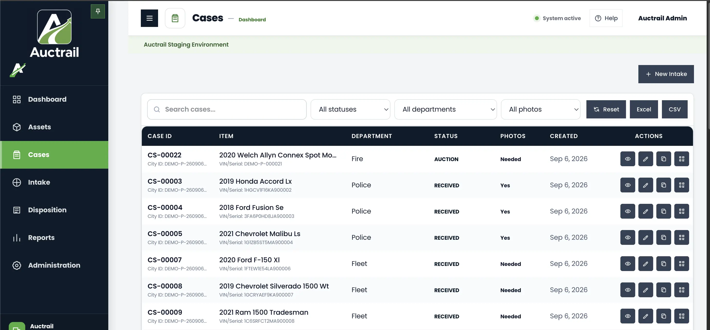

Find and open a case
The Cases page keeps your organization’s work in one list. You can search for a record, narrow the list, open a case, or save the list for use outside Auctrail.
Open the Cases page
Select Cases from the menu on the left. The page shows the cases you are allowed to see.

Find the case you need
Use Search cases
Enter information you know about the record, such as the case number, property name, or identifying number. The list narrows as you search.
Narrow the list
Use All statuses to show a stage of work. Use All departments to show one department. Use All photos to find records that have pictures or still need them.
Clear the search and filters
Select Reset to return to the complete case list.
Open the case
Find the record, then select the eye-shaped View button on the right. This opens the case without changing it.
Other buttons on this page
Starts a new intake record. Use this when property first enters your organization’s Auctrail process.
The pencil-shaped button opens the record so an authorized user can change its information.
The remaining buttons provide quick case actions. What you see depends on your role and the case.
Saves the visible case information as a spreadsheet file.
Saves the information as a simple data file that can be opened in most spreadsheet programs.